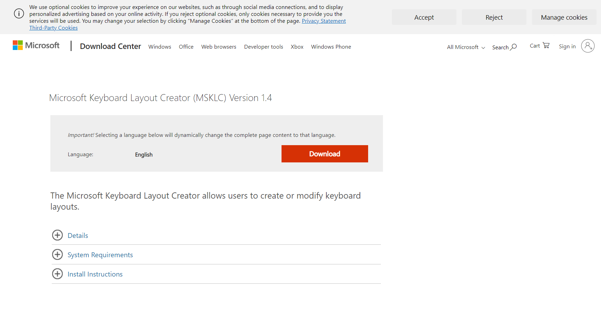
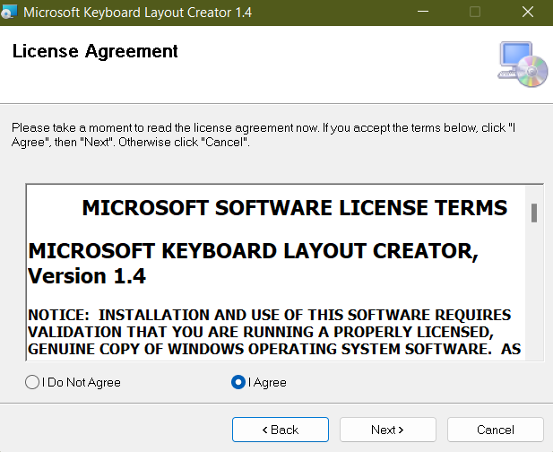
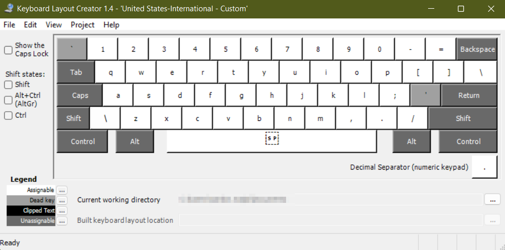
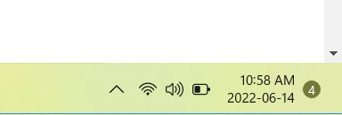
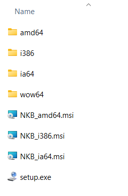
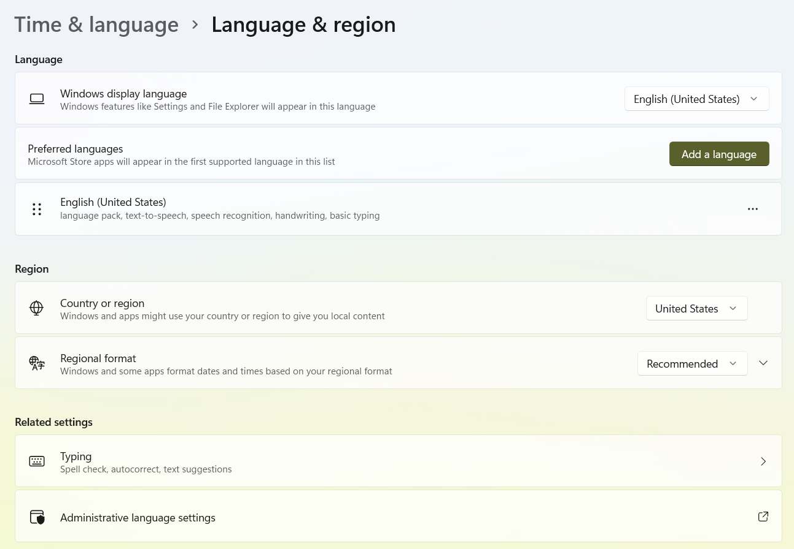
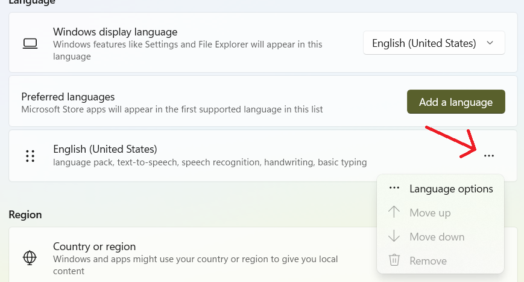
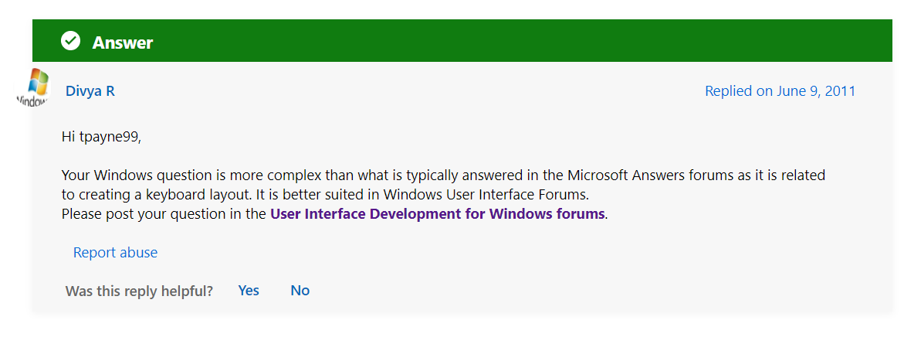
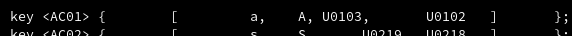

Custom Keyboard Layouts
2022-06-20
If you're using a PC or laptop keyboard, there's a good chance it comes with the EN (US) keyboard layout. That's the letters of the English alphabet, along with special symbols like ;:'"[](). This is a great layout for general use as well as programming.
What this layout lacks is the special letters non-English languages use. Hungarian uses óöőúüűí, German öüäß, and Romanian îăâșț, along with their capitalized versions.
To type these letters, the typical solution is to change the keyboard layout to the language's. However, this doesn't come without the drawback of messing with the existing layout of symbols. For example on the Hungarian 101-key layout, the key to the right of p results in ő. That's great... but how do I type [ now? Am I forced to forever be switching between the different layouts, having to not only learn each of them, but get used to my layout changing all the time?
Luckily there is a solution. The right Alt key, also called AltGr. It can be used in combination with existing keys to produce new symbols. For example, I can have the following setup:
| Keys pressed | Result |
|---|---|
| [ | [ |
| Shift [ | { |
| AltGr [ | ő |
| Shift AltGr [ | Ő |
Similarly, I could (and did) create keybinds for all the letters I want to type in the three languages I need. In short, I had to create a custom keyboard layout.
I personally use a Linux laptop, but I was provided a Windows laptop for work. Follow along with my adventure as I get things working on each platform.
Windows 11
Windows is not exactly known for its support of user choice, and Windows 11 is perhaps worse than 10. Despite this, the Microsoft Keyboard Layout Creator is totally functional.
Naturally, we get a banner about third-party cookies on the download page. I will give Microsoft credit for the clearly visible Reject button though - the internet has gotten scummy enough that not all sites have even that.
This might not be the best time to mention that I actually had to edit the HTML of the page to take this screenshot. Originally, about 70% of the page was taken up by an ad for a laptop.
You might ask "Do I really need to install a program to generate a keyboard layout - essentially a configuration file?". To you I say: ask less questions. Just accept the License Agreement without reading it and proceed.
Not so fast! The installer for the MSKLC told me that I had to install the .NET Framework. Specifically version 3.5 - you know, from the year 2008.
One more download later, I installed the .Net Framework. I could move on to installing MSKLC. That installer only crashed once (refusing to close even when "killed" from the Task Manager)". Luckily, after a few minutes, it decided to work.
The MSKLC actually looks alright. I had to load the English keyboard to make modifications on top of that layout. Totally reasonable. Then, I just had to click the corresponding key and I could input what character I wanted that key to type.
Now you might intuitively think that Shift-clicking a key would change what Shift + that key types. lol.
I spent a few minutes copy-pasting the characters from Wikipedia into this tool. Again, that's perfectly fine - if I could type them, I wouldn't be here in the first place.
Once finished, I could Validate the layout. This came with a nice little animation on my taskbar.
I ended up successfully exporting my custom layout into... this.
As strange as it is to have a keyboard layout as a .exe file, it actually worked.
It took a while to navigate through Windows' menu system. The mix of the legacy Control Panel and the limited but new Settings App is truly a wonder to work with. In the end, I narrowed it down to this page. Changing the keyboard layout was somewhere in here.
Did you find it? It's this little dropdown.
Yes, that arrow was added in MS Paint. Antialiasing is not a thing.
I realized that I made a mistake! I accidentally put î on AltGr z and â on AltGr q. I wanted them the other way around.
No problem! I remembered to save the layout file before exporting, so I just open it up, switch the two around, and export it again, right?
Right?
Well, I got the following error message. Well, technically I got an error message pointing to a log file, but that's just details at this point.
ERROR: The keyboard name 'N_KB' is already in use on this machine.
Yes.
Yes, it's in use.
And I want to override it.
Well, searching for the error message, I got this question regarding the same problem on Microsoft's website, where an actual Microsoft employee responded with the wonderfully unhelpful "idk, ask somewhere else".
Notice how it's marked with a green checkmark as the Answer.
The totally sustainable workaround was to simply give my layout a new name. Enter Copy-of-N_KB_final_5_final.
It took a while, but in the end I got the keyboard working. Was there a better way to do things? Who knows. Even if there was, Windows did a terrible job at communicating it.
Arch Linux
You're going to have to edit this file: /usr/share/X11/xkb/symbols/us.
For example, if your editor is Mousepad, you would run sudo mousepad /usr/share/X11/xkb/symbols/us.
You will find one line for each keyboard key, each with two symbols defining what the key alone and the key with Shift pressed down does. You need to append two more for AltGr + Key and Shift + AltGr + Key.
↓

If it's a Unicode character, you're going to have to use its Unicode Number.
When you're done, save the file, and log out of your graphical environment (or just reboot).